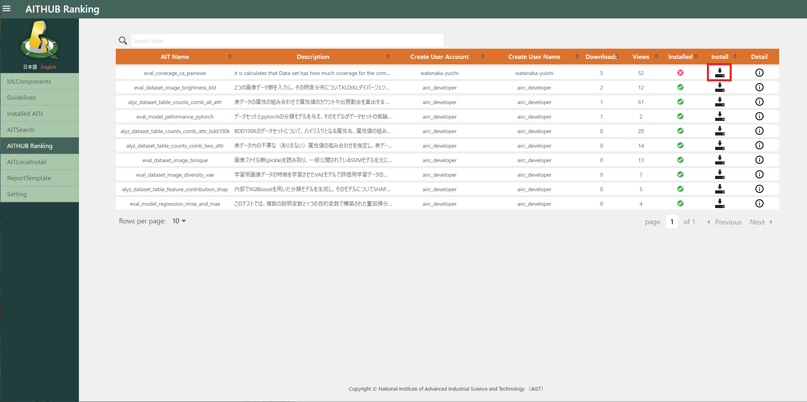
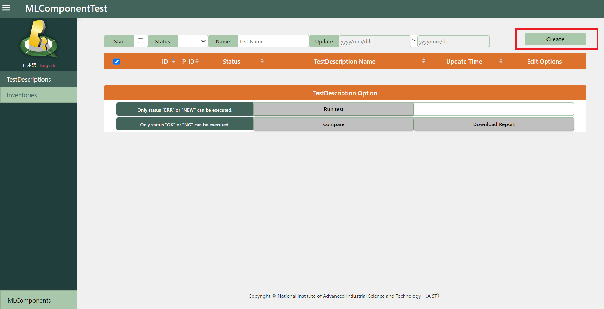
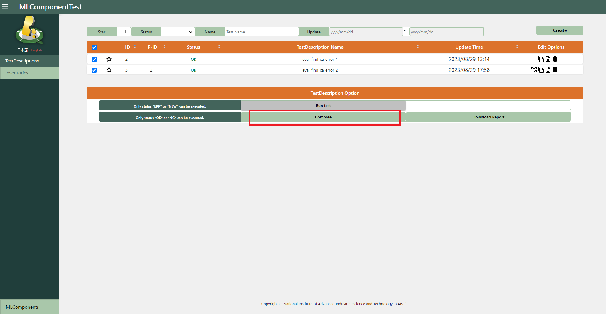

3.1. Execution¶
3.1.1. Register report template (optional)¶
Original report templates can be registered.
(This is not a required task, as the report can be output without a template.)
3.1.1.1. Create report template¶
3.1.1.1.1. When create your own report template¶
A sample template exists in the folder below, please copy, edit and zip it.
qunomon\src\backend\report\templates\1
3.1.1.1.2. When create a report template from guideline¶
In the “Create Report Template” portion of the ReportTemplate screen, select a guideline and click the “Create” button.

3.1.1.2. Register report template¶
In the “Install Report Template” portion of the ReportTemplate screen, select the guideline to be associated with.
Next, enter a template name, upload the zipped template file, and click the “install” button.

3.1.2. Register MLComponents¶
MLComponent is a unit that represents one machine learning model.
When you press the “Create” button on the MLComponents screen, the MLComponent new creation screen will be displayed.
Enter the necessary items in the MLComponent new creation screen and click the “Create” button.
MLComponentName：Enter MLComponent Name
Description：Enter MLComponent Description
Domain：Enter MLComponent Domain
Guideline：Select the guideline to be used
Scope：Select the scope to be used in the guideline

The created MLComponent will appear in the list on the MLComponents screen, so press the “test” icon.


3.1.3. Register Inventories¶
Inventory is a function that manages information on machine learning models and CSV-like data used in AIT.
Basically, registration is done from the Inventory registration screen, but it can also be done from the TestDescriptions registration screen.
Click “Inventories” from the submenu to display the Inventory list screen, then press the “Create” button.

Enter the required fields on the Create New Inventory screen and click the “Create” button.
Name：Enter Inventory name
Path：Enter file path where the Inventory is saved
DataType：Select “dataset”, “model” or “attribute set” (Must be the same type of Inventory used by AIT)
Format：Select a file extension (or type directly if not available)
Description：Inventory description

3.1.4. Register TestDescriptions¶
TestDescription is the unit of test to be performed on Qunomon.
Click the “Create” button on the TestDescription screen to move to the creation screen.

Enter basic information for TestDescription and click the “Next” button.
General→Name：Enter TestDescription name
AIT Program：Select the AIT to be used (you can filter by “Name” or “Description”)
Quality Dimension：Select the quality that AIT measures

Enter detailed information for TestDescription and click the “Create” button.
Acceptance Criteria：Enter the AIT evaluation value (if all of this formula is satisfied when executing TestDescription, the TestDescription execution result will be OK)
AIT Parameter：Enter AIT parameters
Target Inventories：Select the inventory to be used by AIT (Inventories can also be registered using the “+” icon here)

If successfully registered, it will be added to the TestDescription list.

3.1.5. Run TestDescriptions¶
Select the TestDescription to run and execute it with “Run test”.
When finished, the Status of the selected TestDescription changes.
OK：If Acceptance Criteria are satisfied
NG：If Acceptance Criteria cannot be satisfied
ERR：If TestDescription could not be executed
How to investigate the cause of ERR
(1) Confirm the details of the error on the detail screen of the TestDescription that resulted in an ERR.
(2) Confirm log files in the “qai-testbed\qunomon\logs” directory
(3) Confirm airflow logs
Access “http://localhost:8180/home” and check the log of AIT used in TestDescription.
(ID：airflow PASS：airflow)
3.1.6. TestDescriptions Details Display¶
Click the detail icon for the target TestDescription.

Once you select the Test Result output file, you can view its contents.
“Report Contents” allows you to set whether to include the output file in the report.
“Opinion” allows you to add a general review to the report.

Click “Download” in the submenu or “Click here to download the data” to go to the Download screen.

3.1.7. Download Resources¶
Click the download icon to download the file.
3.1.8. Copy TestDescription¶
By pressing the “Copy” icon of TestDescriptions on the TestDescription list screen, you can copy and create the contents.

Edit “Name”, “Acceptance Criteria”, “AIT Parameter” and “Target Inventories” and click the “Create” button.
It will be added to the TestDescription list screen.
After executing the copied TestDescription, a “relationsip” icon will appear.
Click on that icon to view the parent-child relationship of the TestDescription.


3.1.9. Compare TestDescriptions¶
If you select two TestDescriptions that have a parent-child relationship and click the “Compare” button, you can transition to the comparison screen.

Select an output file to display it on the screen.

3.1.10. Report Output¶
Select TestDescription and click the “Download Report” button to output the report.
On the report template selection screen, select the template you created and click the “Preview” button to preview the report using the template.
Alternatively, select “Do not use ReportTemplate” and click the “Preview” button to preview the report without the template.
The string entered in “Report Opinion” will be reflected in the report’s overall rating.
Click the “Create” button to download the report in PDF format.